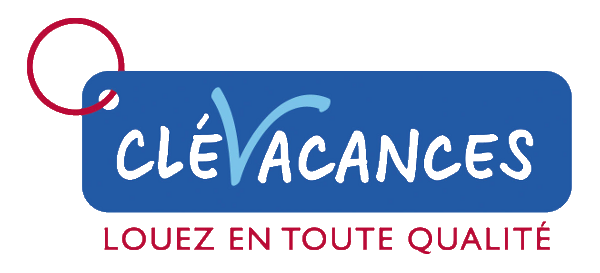
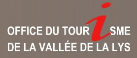
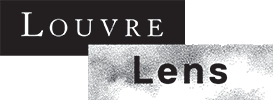
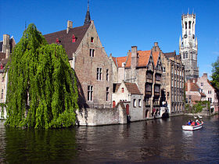
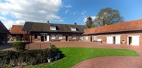

Things to know...
Landmarks
| Clé vacances
The site to rent and be assured quality |
 |
| Office du tourisme de la vallée de la lys
The cities of Merville, Neuf-Berquin, Nieppe, Sailly sur la Lys and Steenwerck stretch along the Lys river. They are at the foot of the Flanders hills and a stones' throw away from Lille. |
 |
| tourisme-nord
Family outing, sightseeing, hiking, wonders. This is the perfect website to plan your stay. |
Culture
| Louvre Lens
This second Louvre museum is located in Lens, in the Pas-de-Calais. This museum is an extension of the Parisian site. It was built on the historical foundation of a famous mine in Lens. |
 |
| Ville de Bruges
This Belgian city is the biggest city of the Occidental-Flandres. It is referred to as the "Venice of the North" because it has many canals throughout the city and around the city centre. There, you can still find the ancient remnants of fortresses and windmills. |
 |
| Steenwerck Museum of rural life
Open to the public since 1987, the museum introduces new generations to farm activities, village events and housing from the beginning of the 20th century. It is perfect location for a family outing. In an amusing and enlightening environment, the ancient ways are passed onto new generations. Everything is there: farm machines, housing, craftsmen, boutiques, school. |
 |
Food
| Estaminet Chez Léon (Estaires)
In his new location, Benoit and his staff will offer regional cuisine, well prepared and very typical of the Flanders. The spirit is inviting, welcoming and warm; the food, rich in taste! |
 |
Fun
| Carnaval de Dunkerque
Come and enjoy the tradition of carnival in an area where people share interest in music, costumes and folk! |
 |